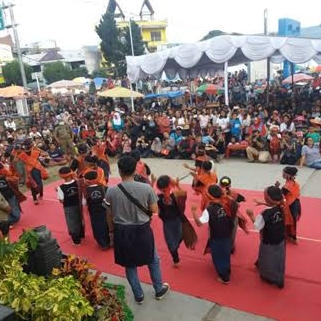

Karnaval Pesona Danau Toba

Karnaval Pesona Danau Toba merupakan Event tahunan Kabupaten Toba Samosir yang merujuk kepada Instruksi Presiden pada Karnaval Kemerdekaan Pesona Danau Toba 2016. Salah satu kegiatan yang selalu ditunggu-tunggu dalam Karnaval Pesona Danau Toba ialah parade kendaraan hias berwarna-warni yang akan wara-wiri di Kawasan Danau Toba. Selain itu akan ada peragaan pakaian adat dan perlombaan kuliner khas batak.